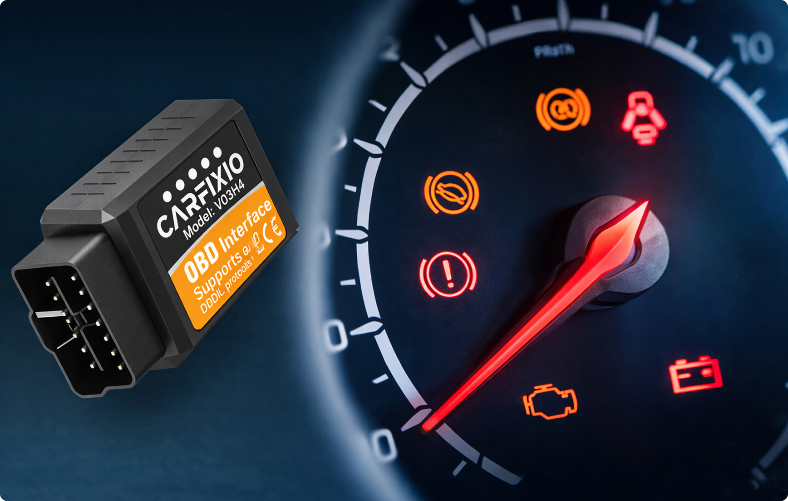
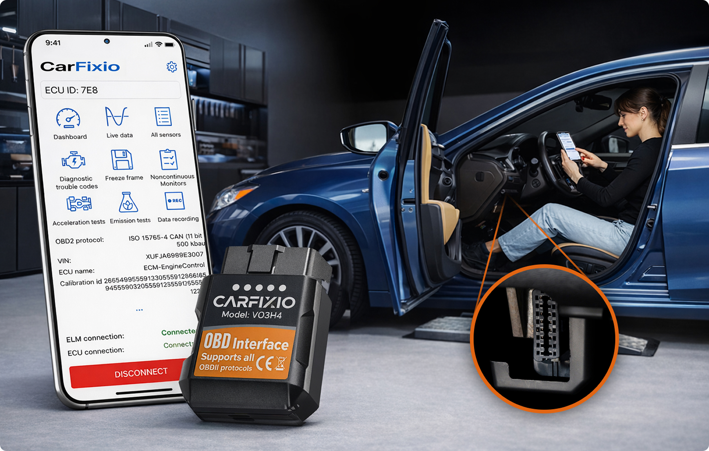
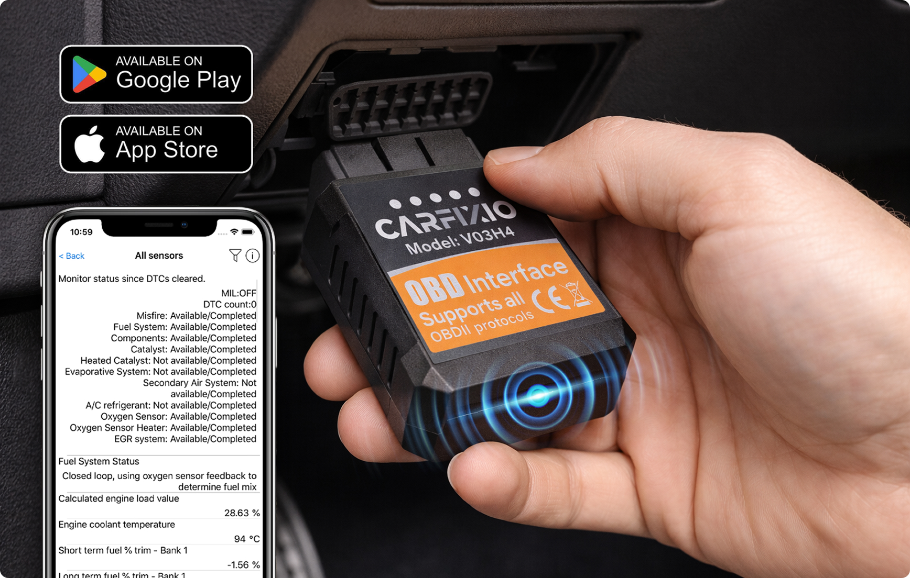
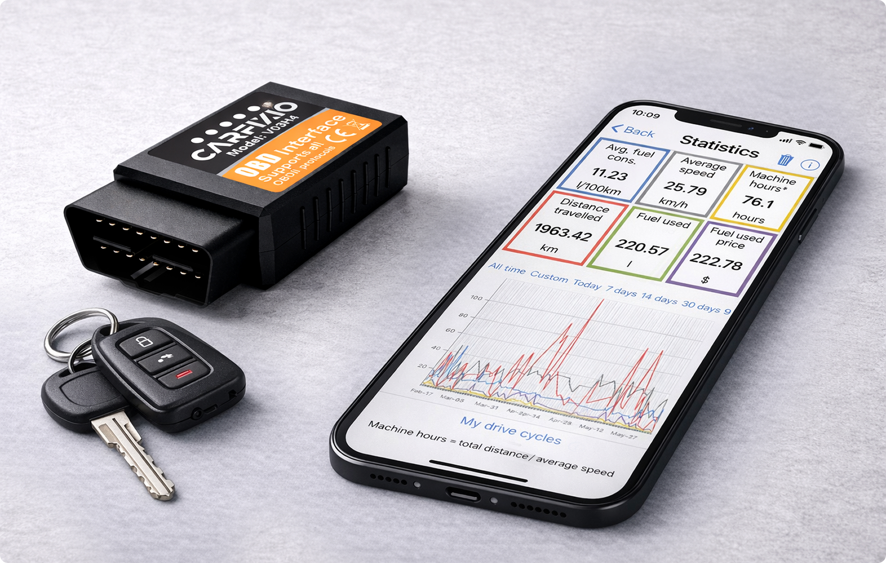
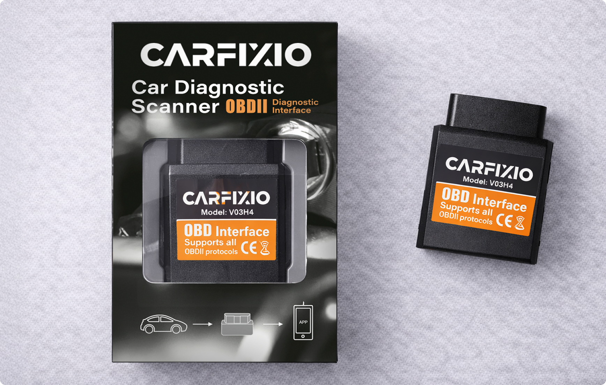

This Tiny Device Plugs Into Your Car And Tells You Exactly What's Wrong (In Seconds)
Written by Michael Davidson
| December 10, 2025 |
Finally understand what your car is trying to tell you – without the expensive trip to the mechanic.
You're driving along, minding your own business, when suddenly – there it is.
That little orange light on your dashboard.
Your stomach drops. Your mind races. What's wrong? Is it serious? Can I still drive? How much is this going to cost me?
Maybe it's the check engine light. Maybe it's the oil pressure warning. Or one of those mysterious symbols you've never seen before and can't identify.
Whatever it is, you know what comes next. The worry. The uncertainty. The nagging anxiety every time you turn the key.
Is it just a small issue? Or does it require an inconvenient (and no doubt expensive) trip to a mechanic? For most of us, there’s no way of knowing.
But what if you could diagnose your car yourself – in 30 seconds?
That's exactly what CarFixio does.
It's a small device that plugs into your car's computer system and translates those cryptic error codes into plain English that anyone can understand.
No mechanic jargon. No confusing technical terms. Just a simple explanation of what's wrong, how serious it is, and what you should do about it.

Think about it: every car made since 1996 has a computer inside it that knows exactly what's wrong. The problem is, you can't read what it's saying. The codes are designed for mechanics, not regular drivers.
CarFixio changes that. It gives you the same information mechanics get – but in language that makes sense.
And the best part? It works in about 30 seconds. Plug it in, open the app on your phone, and you'll know exactly what's going on.
Here's What CarFixio Does For You

1 Translates Mechanic-Speak Into Plain English
Warning lights and error codes are deliberately cryptic. CarFixio breaks them down into clear, simple language.
For example:
- What the car says: "P0420 – Catalyst System Efficiency Below Threshold Bank 1"
- What CarFixio tells you: "Your catalytic converter isn't working as well as it should. You're safe to drive for now, but you'll need to get it checked soon to avoid bigger problems."
See the difference? One leaves you confused and anxious. The other tells you exactly what's happening and what to do next.
2 Tells You How Serious Each Problem Is
This is huge. When a warning light comes on, your first question is always: "Can I still drive this car?"
CarFixio tells you the severity of each issue and whether you need immediate attention or if it can wait.
No more guessing. No more panic. Just clear, actionable information about what to do next.
3 Stops You Getting Ripped Off
Armed with the real diagnosis, you can't be overcharged or sold repairs you don't need.
If a mechanic quotes you £500 to fix something, you'll already know what's wrong. You can get second opinions. Compare prices. Make informed decisions.
Knowledge is power – especially when it comes to car repairs.
4 Catches Small Problems Before They Get Expensive
Minor issues become major bills when they're ignored.
A small coolant leak today could mean a blown head gasket next month. A worn brake pad now could mean damaged brake discs later.
CarFixio spots these problems early, saving you hundreds (or even thousands) in the long run.
5 Works On Virtually Every Car
Got a Ford? Vauxhall? BMW? Toyota? Doesn't matter.
CarFixio works on any petrol or diesel car made after 1996. That includes virtually every car on UK roads today.
One device. Every vehicle in your household. No compatibility issues.
6 Clear Warning Lights Yourself
Sometimes a warning light comes on, you fix the minor issue, but the light stays on anyway.
With CarFixio, you can clear those codes yourself once the problem is fixed – no need to pay a garage £30 just to turn off a light.
How Does It Work?
Using CarFixio is genuinely simple. If you can use a smartphone, you can use this.

Step 1 Plug It In
Locate your car's OBD2 port. It's usually under the dashboard on the driver's side – it takes about five seconds to find.
Plug CarFixio in. That's it. No tools. No installation. Just plug and go.
Step 2 Download The Free App
The CarFixio app is free to download on iPhone or Android. No subscription. No hidden fees.
Open the app, and it'll automatically connect to the device via Bluetooth.
Step 3 See What's Wrong
The app reads your car's computer and shows you:
- What the problem is (in plain English)
- How serious it is
- Whether you can keep driving
- What you should do next
The whole process takes about 30 seconds from plugging in to getting your answer.
And here's something brilliant: you can leave CarFixio plugged in all the time. It monitors your car continuously, so you'll get alerts the moment something goes wrong – often before a warning light even appears on your dashboard.
Real Stories From CarFixio Users
Michael T, Manchester
"Check engine light came on last month. Took it to the garage, they quoted me £450 for a new oxygen sensor. Used CarFixio first to check – turned out to be a faulty sensor reading, not the sensor itself. Cleared the code, light never came back on. Saved myself £450 in about two minutes."
Jennifer K, Bristol
"I'm not a car person at all. When warning lights come on, I panic. CarFixio has been brilliant for peace of mind. Now I know immediately if something's serious or if it can wait until payday. Honestly, every driver should have one of these."
David P, Edinburgh
"Bought this mainly to keep an eye on my daughter's car at uni. She's not great at maintenance, so being able to check her car remotely through the app is fantastic. Spotted a coolant leak before it became a major problem. Worth every penny."
Is CarFixio Right For You?

Here's the thing: if you drive a car, you need CarFixio.
CarFixio is especially valuable if you:
- Get anxious when warning lights appear
- Want to stop overpaying for unnecessary repairs
- Have been ripped off by dodgy mechanics in the past
- Own an older car that occasionally throws up warning lights
- Have teenage children learning to drive
- Want to catch problems early and save money long-term
- Are thinking about buying a used car (plug CarFixio in during the test drive to check for hidden problems!)
In other words: if you own a car, you need this.
For the price of a single garage diagnostic fee, you get unlimited checks for life. And the free app means no ongoing costs or subscriptions.
Try CarFixio Risk-Free

Still on the fence? Here's the deal: trying CarFixio costs you nothing.
Every device comes with a 30-day money-back guarantee. If you don't think it's worth every penny, send it back for a full refund.
But here's what will almost certainly happen: you'll use it once, see how brilliantly simple it is, and wonder how you ever managed without it.
The peace of mind alone is worth the price. The money I've saved on unnecessary garage visits is just a bonus.
Update: Where To Get The Best CarFixio Deal
CarFixio is currently available at a 50% discount, so you can pick it up for an unbeatable bargain price.
However, this sale won't last forever. Stock is limited, and at this price, devices are flying off the shelves.
To make it easy for you, we've provided the link you need below. Click it, and your 50% discount will be applied automatically.
Stop guessing. Stop overpaying. Start knowing exactly what's wrong with your car – every single time.